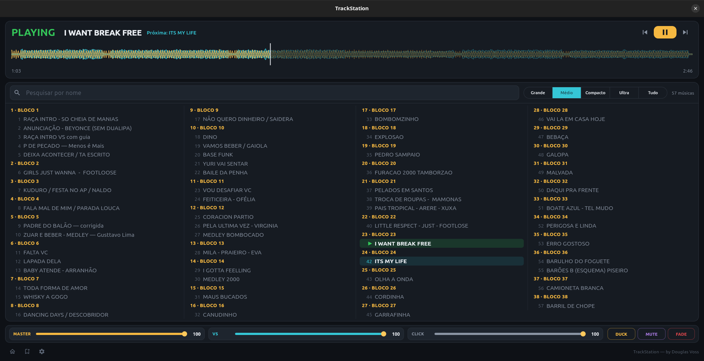

Canais
Dois canais, dois faders
VS num canal, click no outro, cada um com o seu fader. E quando você precisa falar com o público, o duck abaixa o playback — o click continua no seu ouvido.
Ferramenta de palco
Não é um player de música — é quem cuida do playback enquanto você toca. Basta escolher a próxima e pisar; as mãos ficam onde têm que ficar.
Não precisa configurar: o app sabe qual lado é qual

Canais
VS num canal, click no outro, cada um com o seu fader. E quando você precisa falar com o público, o duck abaixa o playback — o click continua no seu ouvido.
Pedal
Escolher a música, tocar, pausar, duck, mute, fade — tudo no pé. E se pisar errado na correria, o comando é ignorado: ninguém para a música no refrão.
Arquivos
Ao importar, o app guarda a sua própria cópia da música e reconhece o arquivo pelo conteúdo. Se alguém mexeu na pasta de músicas na véspera, o show não sente.